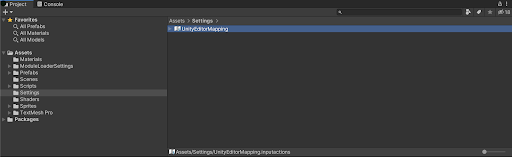
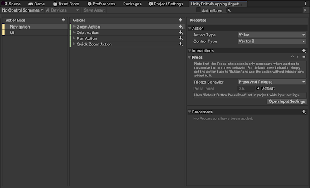
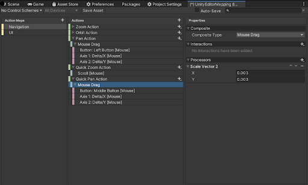
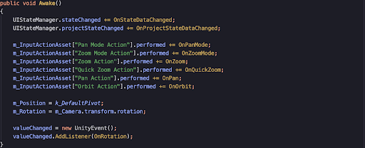
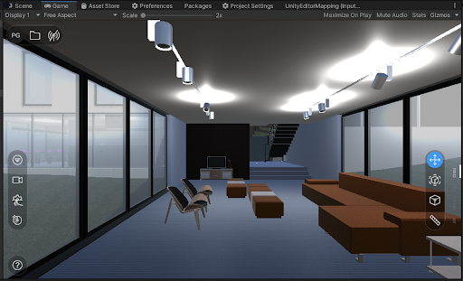

Adding a new input mapping
Sometimes users will need to change or add new Input Mappings. In this document, we will show how we add a new mapping. The viewer uses Unity’s new Input System.
Adding a Quick Pan Mapping
It was requested that the middle mouse button in the viewer be mapped to a PAN action.
Opening the Input Action Editor
Go to Assets/Settings and double-click on the UnityEditorMapping:

This opens the Input Action Editor.

Adding a new Quick Pan Action
We see the similar Quick Zoom Action which is mapped to the scroll wheel. We will add a new Action by pressing + next to the Actions header.
Rename it to Quick Pan Action.
Select the
On the right hand side, in the Action Type dropdown, select Value”, and Control Type “Vector 2”, then click the “+” next to the Quick Pan Action header, this will let you choose a new “Mouse Drag Composite”. Now, configure the Mouse Drag: We also need to scale the Delta/X/Y values. Click on the Mouse Drag line, and press on “+” next to Processors on the right-hand side. Pick “Scale”. Enter 0.003 for both X, Y values. Your entry should look like this:  Note: Don't forget to press Save Asset. Now you need to add the code for this new action: Open UINavigationController.cs, and go to the Awake() method.  You will need to add this line: m_InputActionAsset["Quick Pan Action"].performed += OnQuickPan; And implement the OnQuickPan() callback. You can look at the OnQuickZoom() method as an example. Compile and Run and try your new Action Mapping. You should see the Toolbar on the right look like this, and be able to PAN when you press the middle mouse button and move the mouse around. Select Mouse/Middle Button
Select Axis 1/Delta/X
Select Axis 2/Delta/Y
Coding the New Action Callback
private void OnQuickPan(InputAction.CallbackContext context)
{
StopCoroutine("DelayEndQuickTool" );
StartCoroutine("DelayEndQuickTool", new QuickToolData()
{
delay = k_ToolDebounceTime,
toolType = ToolType.PanTool
});
var delta = context.ReadValue<Vector2>();
Pan(delta);
}
Compile and Run